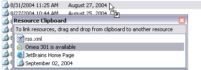
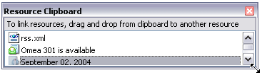

Using the Resource Clipboard
The Resource Clipboard is one of powerful Omea Reader’s Omea Pro’s organizational tools. It helps you create Links between Resources. For details, see Organizing Using Links.
When you are working in one resource tab... Feeds, for example... you can’t drag items directly to, say, News to create links between a feed posting and a newsgroup article. The Resource Clipboard is an intermediary that enables you to do various types of resource linking. With the resource Clipboard you can:
- Create links between different kinds of resources in different tabs
- Link multiple resources of the same or different types to a new or existing Task.
- Link multiple resources of different types with another resource of any type.
How it Works
When you display the Resource Clipboard (View | Resource Clipboard), it remains in the foreground ("on top"). You can drag and drop any type of resource into it. You can then drag any resource(s) from the Resource Clipboard to any resource in any Resource Tab to create links.
The Resource Clipboard can contain one or more resources of any type for linking
Tips and Tricks
Adding Resources to the Resource Clipboard
Locate the desired resource in the Items List, drag it to the Resource Clipboard, and drop it there.
Resizing
If you add more resources than fit in the default size, you can resize the Resource Clipboard by dragging any border or corner.
Resizing the Resource Clipboard
Removing resources from the Resource Clipboard
When you select a resource on the Resource Clipboard, you have access to the full context menu for a resource of the selected type. Most context menus contain a Delete item.
IMPORTANT! The Delete menu item deletes the resource from Omea ReaderOmea Pro. If the resource is a file, it will be sent to the Recycle Bin.
To remove a resource from the Resource Clipboard without deleting it from Omea Reader Omea Pro, choose Remove from Clipboard on the context menu.
See also: